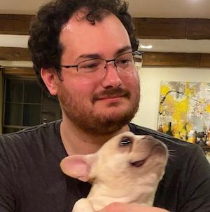
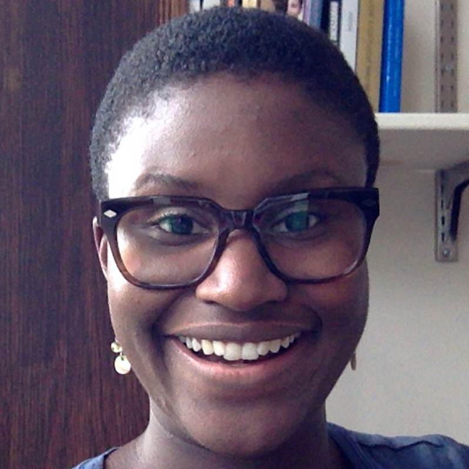

Typically, example grant materials are shared informally, passing between labmates and friends. There are many valid reasons why individuals might not wish to make past grant materials public. However, this means that in general, only students who are already well-connected get to consult past examples when writing their own grants—an unintentional but serious equity issue. The individuals below have generously agreed to share their grant materials, in hopes that these materials will help future students, especially those who do not have other means to access such examples.
For advice on applying, see our FAQ!
A note to users: you will notice that we list a lot of information about each grant, including whether it was awarded or not. We hope this highlights the ultimately luck-based nature of getting grants—if you're attentive, you might notice that awarded and unawarded grants generally do not differ in quality. This is a good thing to keep in mind as you write your own grants: do your best, but know that in the end, this is a fairly random process, and so the outcome is not a comment on your merit or abilities.

Rosie Aboody
Status: Awarded
Notified: June 2022
Rated: HC
Area: Developmental
MATERIALS
Title: A large-scale investigation into the foundations and development of social cognition
Note: I can't share other documents (e.g., data plan) that I did not originate. If you need access, please reach out and I will run it through my PIs.

Mika Asaba
Status: Awarded
Notified: April 2022
Rated: HC
Area: Developmental
MATERIALS
Title: Computational and developmental investigations of children’s self-representations and learning decisions

Isaac Davis
Status: Not Awarded
Notified: August 2022
Rated: C
Area: Cognitive
MATERIALS
Title: The co-development of persuasive reasoning and Theory of Mind: A
computational approach
Daniel Horschler
Status: Awarded
Notified: May 2021
Rated: HC
Area: Comparative Cognition
Materials: contact me!
daniel [dot] horschler [@] yale.edu
Title: Understanding the Evolutionary Origins of Theory of Mind: Computational Modeling of Conserved Cognitive Mechanisms Across Primates

Ashley E. Jordan
Status: Awarded
Notified: May 2021
Rated: C
Area: Developmental
MATERIALS
Title: Social Preferences Among Transgender, Gender Nonconforming, and Gender Typical Children
Julia Marshall
Status: Awarded
Notified: June 2021
Rated: HC
Area: Developmental
MATERIALS
Title: The Development of Children's Punishment Behavior Across Social and Motivation Contexts
Note: Also applied in 2019 with nearly-identical materials (not awarded)